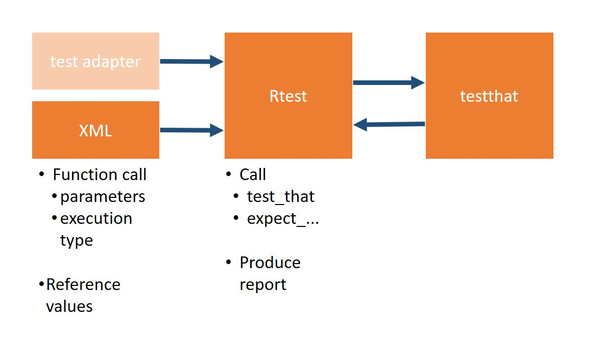

A XML-Based Testing Framework for Automated Component Tests of R Packages
This provides a framework for R packages developed for a regulatory environment. It is based on the ‘testthat’ unit testing system and provides the adapter functionalities for XML-based test case definition as well as for standardized reporting of the test results.
Features
Main features
- Human readible tests -
XMLbased - example - Human readible test reports -
htmlwebsites example - High code coverage - codecov
Test types
- Image comparison -
htmlwebsites example - Data frame element wise comparison
- List element wise comparison
- Variables
- Vectors
Test Report
- Full package dependency logging in Test reports
- Full system environment logging in test reports
For who?
- Everybody working in a regulated field
- Everybody who has testers that cannot code
- Everybody that needs pretty test reports
- Everybody who wants to perform end-to-end tests
Get Started
install.packages("RTest")
# For devel version
devtools::install_github("zappingseb/RTest")There are two ways to start with RTest
⚠️ NOTE on reporting functionalities ⚠️
To derive more comprehensive reports from testthat>2.0 you would have to overwrite the testthat function as.expectation.logical by:
assignInNamespace("as.expectation.logical", RTest::as.expectation.logical, ns="testthat", pos="package:testthat")To avoid this unsafe call we created an issue at testthat: https://github.com/r-lib/testthat/issues/836
The difference between the testthat and the RTest version of the function lays in the message output. testthat just gives a message in case of failure, while RTest always creates a message.
1 Vignettes
library(RTest)
vignette("RTest",package="RTest")2 Work your way through a basic test setup
The easiest way to start with RTest is to clone this repository and especially the xml-templates folder. There you can find some basic test cases that work without creating a test-adpater. See the figure below to know what this means:

So what RTest basically does, is allowing you to specify R-function calls and testthat calls inside XML files. Of course it also executes the tests and hands back a pretty nice report.
A basic example of such an XML based test is RTest_TC-generic.xml. It calls the functions
- example_data_frame
- example_image
- example_list
- example_vector
- example_variable
that can be found in utils.examples.R. Each function will create an object. example_data_frame an data.frame, example_image an ìmage, … Inside the XML file you will see an example of testing the variable function as:
<example_variable test-desc="Test relative difference">
<params>
<x value="1" type="numeric" />
<y value="1.2" type="numeric" />
</params>
<reference value="-0.2" type="numeric" />
<testspec>
<execution execution-type="silent" />
</testspec>
</example_variable>The R-Code of the function is:
example_variable <- function(x=1.2,y=1){
(x-y)/(x)
}If you now run the following code inside your clone of this repo:
RTest.execute("./inst/xml-templates", f.pattern="RTest_TC-generic.xml")an easy to read report will be generated. The full Test report can be found here: https://zappingseb.github.io/RTest/articles/RTest_TC-generic_result.html
But the major point is the variable report output which looks like this:
And that’s the whole principle of RTest. You can generate human-readible tests and get human-readible reports by
- Generating XML test cases
- Running
RTest.execute - Reading the output
.htmlreport